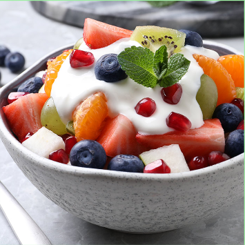

Una comida bien equilibrada es como un poema al desarrollo de la vida
En cuestión de protector solar, sí debemos de tener en claro que no es un protector solar, simplemente tiene algo de protección. También se puede llegar a sentir un poco pesada, pero la textura es rica y con poca cantidad puedes hidratarte muy bien toda la cara. Se me hace una muy buena opción para aquellos que buscan tener un antioxidante, parte de protección e hidratación en un mismo producto, sin contar que también tiene niacinamida que es muy buena para regular la producción de grasa entre otros beneficios.
12/34 comentarios